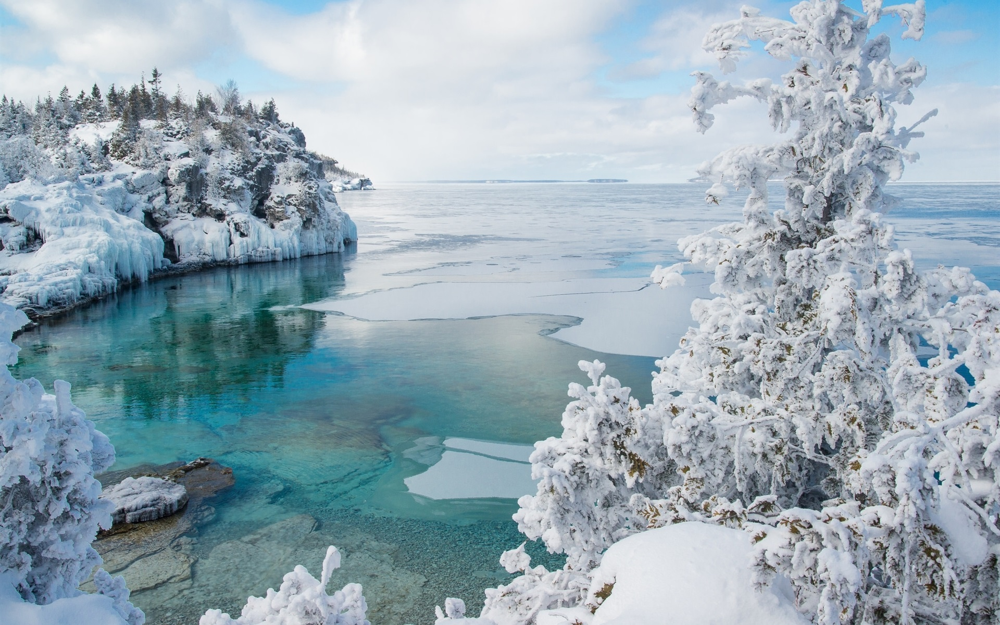
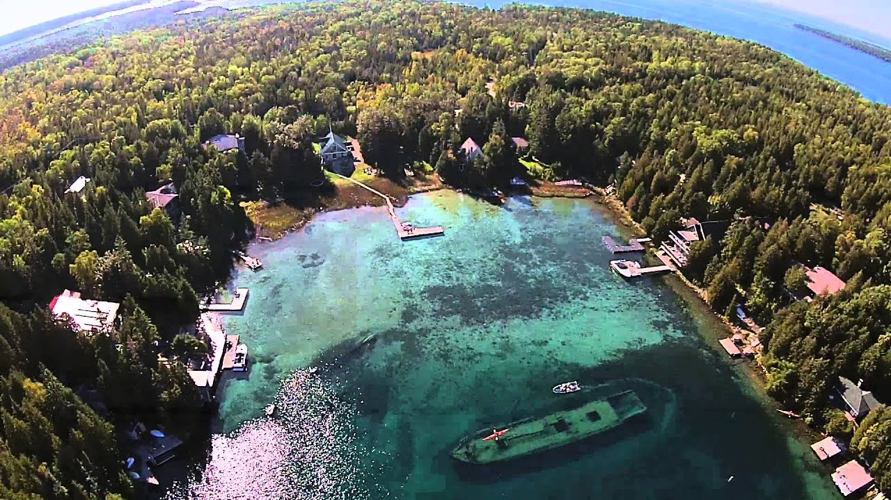

Bruce Peninsula



The Bruce Peninsula is a peninsula in Ontario, Canada, that lies between Georgian Bay and the main basin of Lake Huron. The peninsula extends roughly northwestwards from the rest of Southwestern Ontario, pointing towards Manitoulin Island, with which it forms the widest strait joining Georgian Bay to the rest of Lake Huron. The Bruce Peninsula contains part of the geological formation known as the Niagara Escarpment.
Indigenous history
Saugeen First Nation is an Ojibwa First Nation located along the Saugeen River and Bruce Peninsula in Ontario, Canada. The original territory included all of the Saugeen River watershed and all of the Bruce Peninsula. Organized in the mid-1970s, during a period of increased political activism, Saugeen First Nation declared itself the primary 'political successor apparent' to the historic Chippewas of Saugeen Ojibway Territory, who had occupied this territory and made treaties with the Crown. However, along with the Saugeen First Nation, the Chippewas of Nawash Unceded First Nation also claims to be the 'political successor apparent' to the Chippewa of Saugeen Ojibway Territory. Under the Saugeen Tract Agreement, the portion south of Owen Sound was ceded to the Crown, with reserves later established on the Bruce Peninsula. The claims for land and payment of rent on lands discussed in early treaties are significant. "The two First Nations are claiming aboriginal title to the lands under the water covering an area of Lake Huron and Georgian Bay from south of Goderich, west to the international border and north to the mid-point between the tip of the Bruce Peninsula and Manitoulin Island; then east to the mid-point of Georgian Bay and south to the southern-most point of Nottawasaga Bay."

Parks
There are 2 National Parks, 8 Ontario Parks, and 4 Federation of Ontario Naturalists Parks located within the Bruce Peninsula.
- Bruce Peninsula National Park - In the heart of a World Biosphere Reserve, the park contains massive, rugged cliffs inhabited by thousand year old cedar trees. The park is composed of an array of habitats from alvars to dense forests and several small lakes. Together these form a greater ecosystem - the largest remaining chunk of natural habitat in southern Ontario.
- Fathom Five National Marine Park - The waters at the mouth of Georgian Bay are home to Fathom Five - Canada's first National Marine Conservation Area. The park preserves 22 shipwrecks and several historic light stations. Fathom Five's freshwater ecosystem contains some of the most pristine waters of the Great Lakes. The park contains rugged lake bed topography that is popular with scuba divers.
- Black Creek
- Ira Lake
- Johnstons Harbour
- Little Cove
- Cabot Head
- Smoky Head
- Lion's Head
- Hope Bay Forest
Wildlife
There are many varieties of wildlife on the Bruce Peninsula, such as the northern flying squirrel, black bear, chipmunk, fisher, long-eared bats, red squirrel, fox, massasauga rattlesnake, red-shouldered hawk, barred owl, hermit thrush, black-throated blue warbler, scarlet tanager and yellow-spotted salamander. The Bruce Peninsula is located on a major northern migration route, so many species of birds, such as the bald eagle, have their wintering grounds here. The highest concentration of nesting birds can be found in the Bruce in May and June each year. About 20 species of warblers breed on "the Bruce," including the black-throated green, yellow, yellow-rumped, and Blackburnian warblers and the ubiquitous American redstart. They make their summer homes in the extensive wooded areas along the Peninsula. The annual Huron Fringe Birding Festival in May observes the spring migration. The endangered piping plover has made a comeback along the northern shores of Sauble Beach as well, and nest in restricted areas of the beach. These are well marked to prevent visitors overrunning the area and to reduce negative human effects. Migrating hawks also follow the Niagara Escarpment. Hawks travel during the day, and can be seen in the vicinity of Cabot Head in the open areas west of Dyers Bay, and near Tobermory, in April.

External Links
- Guide to the Bruce Peninsula
- Official website of Bruce Peninsula Tourism
- The Bruce Peninsula Bird Observatory
- Things to do in Bruce Peninsula